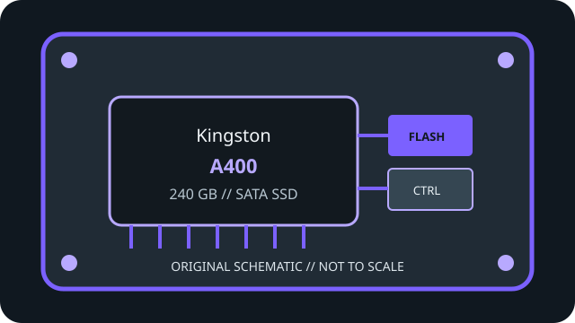

[ INDIVIDUAL COMPONENT // SATA SOLID-STATE DRIVE ]
Kingston A400 240 GB
Model-specific record for manufacturer SKU SA400S37/240G. See linked manufacturer documentation for rated values and revision details.

IDENTIFICATION: Confirm full SKU SA400S37/240G, capacity, package-region suffix and hardware revision against the physical label; do not assume same-family variants share internals.
Specifications
| Manufacturer / model | Kingston A400 240 GB |
|---|---|
| Full manufacturer SKU | SA400S37/240G |
| Capacity | 240 GB |
| Form factor / height | 2.5-inch SATA, 7 mm (check physical clearance and the manufacturer’s exact package/revision documentation). |
| Interface / limit | SATA III / SATA 6 Gb/s signaling. Protocol overhead and negotiated host link speed limit payload throughput; M.2 SATA, mSATA and NVMe are not interchangeable connectors/protocols. |
| Controller, NAND, endurance & performance | Kingston lists 3D NAND, SATA Rev. 3.0 (6 Gb/s), sequential reads up to 500 MB/s and writes up to 350 MB/s, and 80 TBW for the 240 GB model. The manufacturer datasheet does not identify the controller, so it is not inferred. |
| Host compatibility | For a PC/laptop with a 2.5-inch bay or suitable mounting and a SATA data connector plus SATA power. SATA backward compatibility depends on host implementation; check BIOS/UEFI, operating-system and boot support, connector clearance and required capacity support. TRIM/SMART requires suitable OS, driver and ATA pass-through support; some USB bridges/RAID modes do not pass commands. |
Archival, health & service notes
- Record label, serial, firmware, SMART/health snapshot, host/controller, date and source revision; a family name alone is not enough to identify a revision.
- Advertised maxima and TBW are manufacturer ratings, not a guarantee of speed or service life in a particular workload.
- Keep verified backups and periodic integrity checks; an SSD is not a substitute for multiple independent archival copies.
Manufacturer sources
- Kingston A400 product pageManufacturer product specifications and compatible capacity/SKU range.
- Kingston A400 datasheetManufacturer PDF datasheet including the 240 GB specification row.